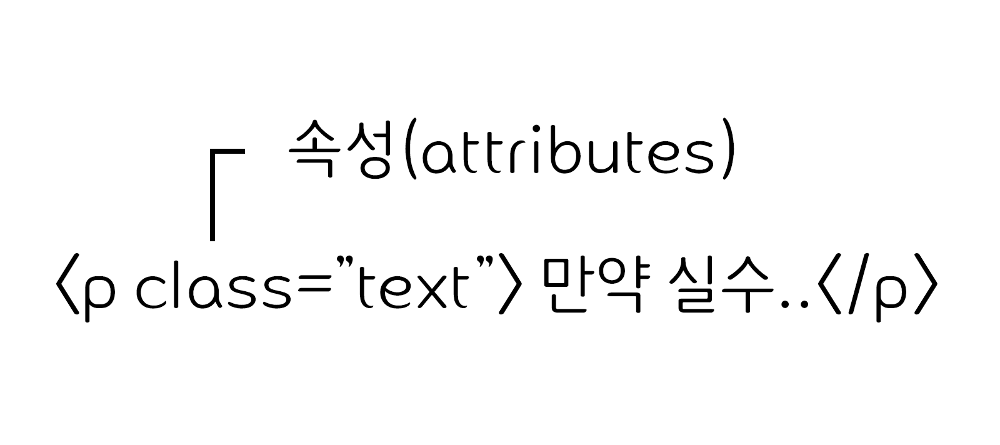
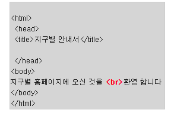
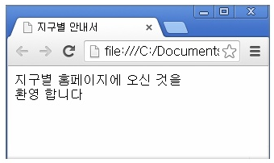
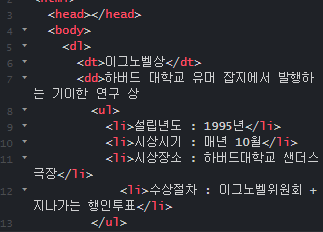
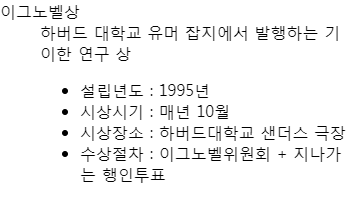
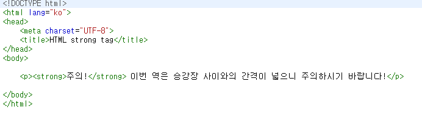
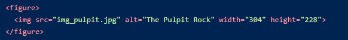
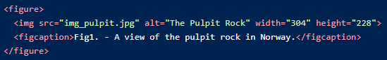

HTML(Hyper Text Markup Language)
웹 문서를 표현하기 위한 하이퍼텍스트 마크업 언어.
하이퍼텍스트란 문서에서 다른 문서로 이동하는 것을 말하며, 마크업이란 태그를 사용하여 콘텐츠의 의미를 부여하는 것을 말한다.
태그들을 이용하여 텍스트 이상의 요소를 정의하는 약속된 언어
프로그래밍 언어는 X, 우리가 보는 웹페이지가 어떻게 구조화되어 있는지 브라우저로 하여금 알 수 있도록 하는 마크업 언어. 이는 개발자로 하여금 복잡하게도 간단하게도 프로그래밍 할 수 있다. HTML은 elements로 구성되어 있으며, 이들은 적절한 방법으로 나타내고 실행하기 위해 각 컨텐츠의 여러 부분들을 감싸고 마크업 한다.
- HyperText는 단순 텍스트 이상의, 링크 등의 개념이 포함 된 텍스트
- Markup은 꺽쇠 ( <,>)로 이루어진 태그를 사용하는 규격
(실제로 웹사이트에 표시되는 문자, 사진, 영상, 레이아웃 모두 HTML로 구성되어있다.)
태그(Tag)
HTML에서 정보를 전달하는 방식을 의미.
웹 상의 다른 페이지로 이동하게 하는 하이퍼링크 내용들을 생성하거나, 단어를 강조하는 등의 역할

- 열린 태그(Opening tag) : 요소의 이름과 열고 닫는 꺽쇠 괄호로 구성된다. 요소가 시작부터 효과가 적용되기 시작한다.
- 닫는 태그(Closing tag) : 요소의 이름 앞에 슬래시(/)가 있는것을 제외하면 열린 태그와 같습니다. 이것은 요소의 끝에 위치한다. 닫는 태그를 적어주지 않는 것은 흔한 초심자의 오류이며, 이것은 이상한 결과를 낳게된다.
- 내용(Content) :요소의 내용이며, 이 경우 단순한 텍스트이다
- 요소(element) :열린 태그, 닫는 태그, 내용을 통틀어 요소라고한다
속성(attridutes)
HTML 속성은 태그에 기본 기능 및 유형을 설정하고, 태그의 동작으로 제어하기 위한 용어
- 요소 이름 다음에 바로 오는 속성은 요소 이름과 속성 사이에 공백이 있어야 되고, 하나 이상의 속성들이 있는 경우엔 속성 사이에 공백이 있어야 한다.
- 속성 이름 다음엔 등호(=)가 붙는다.
- 속성 값은 열고 닫는 따옴표로 감싸야 한다.
요소(Element)
HTML을 구성하는 가장 기본 단위
태그의 시작태그와 끝나는 태그사이의 범위를 요소라 한다.
주석
주석표시는 프로그램에 영향을 미치지 않으며, 설명이나 메모를 목적으로 사용
<!-- 주석표시 -->;
블록요소 / 인라인 요소
블록는 박스, 인라인는 텍스트를 의미
- 블록 엘리먼트(Block Element)
- 독립된 박스 영역으로 한 줄에 하나에 블록요소만 표현
- 블록요소에는 블록요소 와 인라인 요소를 포함 가능
- <div>, <p>, <ul>, <li>, <hr>, <address>
- 인라인 엘리먼트(Inline Element)
- 독립된 텍스트 영역으로 한 줄에 여러개의 인라인요소를 표현
- 인라인 요소에는 블록요소가 포함 불가능 (인라인 요소는 포함 가능)
- <span>, <a>, <img>, <input>, <button>, <br>
DTD 선언
웹문서를 제작하기 위해서는 웹 문서 유형을 설정해야 한다.
DTD(Document Type Declaration) 을 설정하지 않거나 잘못 설정하면 브라우저에 따라 화면이 다르게 나오거나 렌더링이 달라지기 때문에 독타입을 설정해야한다.
<!-- HTML 4.01 Strict -->
<!DOCTYPE HTML PUBLIC "-//W3C//DTD HTML 4.01//EN" "http://www.w3.org/TR/html4/strict.dtd">
<!-- HTML 4.01 Transitional -->
<!DOCTYPE HTML PUBLIC "-//W3C//DTD HTML 4.01 Transitional//EN" "http://www.w3.org/TR/html4/loose.dtd">
<!-- HTML 4.01 Frameset -->
<!DOCTYPE HTML PUBLIC "-//W3C//DTD HTML 4.01 Frameset//EN" "http://www.w3.org/TR/html4/frameset.dtd">
<!-- XHTML 1.0 Strict -->
<!DOCTYPE html PUBLIC "-//W3C//DTD XHTML 1.0 Strict//EN" "http://www.w3.org/TR/xhtml1/DTD/xhtml1-strict.dtd">
<!-- XHTML 1.0 Transitional -->
<!DOCTYPE html PUBLIC "-//W3C//DTD XHTML 1.0 Transitional//EN" "http://www.w3.org/TR/xhtml1/DTD/xhtml1-transitional.dtd">
<!-- XHTML 1.0 Frameset -->
<!DOCTYPE html PUBLIC "-//W3C//DTD XHTML 1.0 Frameset//EN" "http://www.w3.org/TR/xhtml1/DTD/xhtml1-frameset.dtd">
<!-- XHTML 1.1 -->
<!DOCTYPE html PUBLIC "-//W3C//DTD XHTML 1.1//EN" "http://www.w3.org/TR/xhtml11/DTD/xhtml11.dtd">
<!-- html5 -->
<!DOCTYPE html>
언어 속성 설정
콘텐츠에 언어를 인식하고 언어 정보를 추출하는데 사용
미리 언어를 설정하면 효율성이 더 좋아짐
<!-- HTML5 -->
<html lang="ko">
<!-- HTML4 -->
<html xmlns="http://www.w3.org/1999/xhtml" xml:lang="en">
문서 구조
HTML는 구조는 html요소 안에 haed와
body로 이루어짐
- HTML 구조는 독타입 선언을 해주어야 하나의 웹 문서가 완성
- HTML 문서는 상하 관계가 존재하는 계층적인 구조
- 상위에 있는 요소와 하위에 있는 요소는 부모 자식 관계로 표현
- 이러한 구조를 DOM 구조라 한다
- HEAD 요소
- 제목
- 사이트정보
- 스크립트
- 스타일시트
- 메타 정보등을 제공
- BODY 요소에는 문서 본문에 해당하는 콘텐츠 영역
<!DOCTYPE html>
<html lang="ko">
<head>
</head>
<body>
</body>
</html>
HTML5 지원중단된 태그와 속성
여러가지 사용성에 문제가 있거나 css로 하는 것이 효율적이거나 잘 사용이 되지 않아서 몇몇 태그들이 없어졌다.
HTML 속성(Arrtdiures)
alignbgcolorbordershpacevspace
태그 속성(Elements)
<basefont><big><center><fonr><strike>: <del> ,또는 <s> 로 대체<tt><frame><frameset><noframes><acronym>: <addy>로 대체<applet>: <embed> 로 대체<isindex><dir>:<ul> 로 대체<big>
HTML5 추가된 태그
구조적인 표현을 위해 추가된 태그
<section>: 일반적인 문서나 앱의 섹션을 나타낸다.
h1, h2, h3, h4, h5, h6등과 같은 태그와 함께 문서의 구조를 나타낼때 사용.<article>: 문서내의 하나의 독립적인 컨텐츠 부분을 나타낸다.
블로그 엔트리 또는 뉴스 기사 등에 사용.<aside><hgroup>: <section>의 헤더를 나타낸다.<header><footer><nav><figure>:컨텐츠와 연관된 미디어를 나타낸다.<figcaption>:옵셔널한 캡션 태그<video>: 비디오 미디어를 추가한다. (자체 UI를 제공)<audio>: 오디오 미디어를 추가한다. (자체 UI를 제공)<source>: <video>나 <audio> 의 소스를 나타낸다.<track>: 비디오를 위한 텍스트 트랙 제공.<embed>: 플러그인 컨텐츠를 위한 태그<canvas>: 동적인 비트맵 그래픽을 활용하는 캔버스 공간<mark>: 다른 컨텐츠와의 연관성을 문서 내부에 나타내기 위한 태그<progress>: 다운로드 등을 할 때 얼마나 진행되었는지 보여주는 태그<meter>: 디스크 사용량 등과 같은 측정치를 나타내는 태그<time>: 날짜와 시간을 나타내는 태그<ruby>, <rt>, <rp>: Ruby 를 표시하는 태그<bdi>: 주위와 독립적으로 흐르는 텍스트를 나타내는 태그<wbr>: 라인을 바꿀 수 있는 위치를 나타내는 태그<command>: 사용자가 호출할 수 있는 커맨드를 나타내는 태그<details>: 추가 정보나 사용자가 획득할 수 있는 컨트롤을 나타내는 태그<keygen>: key pair를 생성하는 컨트롤 태그<output>: 스크립트 등을 통해 계산된 결과를 나타내는 태그<input>
시멘틱 태그
시맨틱(Semantic)은 "의미의, 의미론적인"이라는 뜻
HTML5에 도입된 시맨틱 태그는 개발자와 브라우저에게 의미있는 태그를 제공
컴퓨터가 정보를 이해하고, 논리적인 추론까지 할 수 있는 구조를 만들기 위해 추가된 태그
조건식 주석
조건을 만족하는 경우에만 작동하는 일종의 익스플러러 전용 if 문법
크로스브라우징을 위해 많이 사용되는 방법으로 익스플로러 브라우저의 버전을 구분하는 용도로 사용
- 어떠한 조건이 충족되지 않으면 주석처리가 되고, 조건이 충족되면 주석안의 내용이 브라우저에 렌더링 되는 것을 의미
- IE10 미만에서만 작동하는 조건문으로 IE 브라우저의 버전을 구분하여 스타일
- JS 등을 삽입하는 용도로 사용
- 프로그래밍의 주석과 마찬가지로 조건을 만족하지 않으면 무시되는 코드
(크롬 등 다른 브라우저에서는 해당 코드를 주석으로 인식하여 무시한다.)
HTML5shiv
HTML5의 Element를 HTML5를 지원하지 않는 IE 9 이하 하위 버전 등에서 사용할 수 있도록 해 주는 Javascript 라이브러리
HTML5shiv 알려진 문제와 제한 사항
- ShivMethods옵션(document.createElement)과 html5.createElement메소드는 부모노드를 가진 분리되지 읺은 요소를 생성
- 복제노드(cloneNode)의 문제는 현재 HTML5 Shiv에 의해 해결되지 않는 문제
(동적으로 생성 될 수 있지만, 모든 경우에 복제되진 않는다.) - HTML5 Shiv의 printshiv 버전은 인쇄 스타일과 인쇄 전체 DOM을 변경
복잡한 웹사이트나 많은 양의 인쇄 스타일을 가질경우 성능 및 스타일 문제가 발생 할 수 있음 해결방법은 IE6~8에 대한 인쇄 스타일을 구현하는 또 다른 기술인 HTML5 Shiv의 htc-branch를 사용하는 것
웹 표준과 웹 접근성
웹 표준 과 웹 접근성 정의
웹 표준(Web Standards)
- 사용자가 어떤 브라우저나 기기를 사용하더라도 내용을 동일하게 볼 수 있도록 하는 것
- 웹 표준 준수는 웹 접근성 준수를 위한 핵심이라고 할 수 있다.
웹 표준의 장점
- 수정 및 운영관리 용이
- 콘텐츠의 올바른 구조화와 CSS로 시각표현을 통일하여 제어하게 되어 페이지 제작의 부담 감소 및 관리용이
- 접근성 향상
- 웹 표준을 이용해 작성한 문서는 다양한 브라우징 환경에 대응이 가능하며 휴대폰, PDA에서도 정상적인 작동 및 장애인 지원용 프로그램에도 도움이 되므로 사용자나 접속 장치의 접근성이 용이
- 검색엔진 최적화(SEO)
- 구조화된 웹페이지는 검색 로봇 수집을 통해 검색엔진에 효율적으로 노출 될 수 있도록 검색엔진의 검색결과를 최적화
- File Size 축소, 서버 저장 공간 절약
- 효율적인 소스 작성은 파일 사이즈와 서버공간을 절약할 수 있으며 동시에 화면표시에 소요되는 시간을 단축
- 효율적인 마크업
- CSS와 HTML문서를 분리하여 제작할 경우 불필요한 마크업이 최소화되어 페이지 로딩속도 향상
- 호환성 가능
- 기존 IE브라우저에서만 작동이 가능했던 요소들이 웹 표준을 준수함으로써 다양한 브라우저 (크롬, 파이어폭스, 사파리, 오페라 등)에서도 작동
웹 접근성(Web Accessibility)
신체적 제한조건을 가진 고령자나 장애인들도 이용하기에 편리하도록 웹을 구성, 디자인 하는 것.
- WAI의 웹 콘텐츠 접근성 지침
*인지성(Perceivable)
정보와 사용자 인터페이스 요소는 그들이 인지할 수 있도록 사용자에게 표시될 수 있어야 한다
- 모든 텍스트가 아닌 콘텐츠에 대체 텍스트를 사람들이 원하는 인쇄, 점자, 음성, 기호 또는 간단 언어 등과 같은 형태로 제공해야한다
- 시간을 바탕으로 한 미디어에 대한 대안을 제공해야한다
- 정보와 구조의 손실 없이 콘텐츠를 다른 방식(예를 들면 더욱 간단한 형태로)들로 표현할 수 있어야 한다
- 사용자들이 보다 쉽게 보고 들을 수 있는 전경에서 배경을 분리한 콘텐츠를 만들어야 한다
*운용성(Operable)
사용자 인터페이스 요소와 탐색은 운용 가능해야 한다.
- 키보드로 모든 기능을 사용할 수 있도록 해야 한다.
- 읽기 및 콘텐츠를 사용하는 사용자에게 충분한 시간을 제공해야 한다.
- 알려진 방법으로 발작을 일으킬 수 있는 콘텐츠를 디자인하지 않아야 한다.
- 사용자가 탐색하고, 콘텐츠를 찾고 그들이 어디에 위치하고 있는지를 알 수 있도록 도와주는 방법을 제공해야 한다.
*이해성(Understandable)
정보와 사용자 인터페이스 운용은 이해할 수 있어야 한다.
- 텍스트 콘텐츠를 판독하고 이해할 수 있도록 만들어야 한다
- 웹 페이지의 탑재와 운용을 예측 가능한 방법으로 제작해야 한다.
- 사용자의 실수를 방지하고 수정할 수 있도록 도와야 한다.
*내구성(Robust)
콘텐츠는 보조 기술을 포함한 넓고 다양한 사용자 에이전트에 의존하여 해석될 수 있도록 충분히 내구성을 가져야 한다.
- 보조 기술을 포함한 현재 및 미래의 사용자 에이전트의 호환성을 극대화해야 한다
태그
기본적으로 많이 사용하는 태그들
문단에 쓰는 태그
<div>
일반적으로 문서의 컨텐츠 영역을 설정할때 사용
<p>
문단을 쓸 때 사용 p태그와 p태그 사이에는 한 줄의 행간이 표현
목록을 쓸때 사용하는 태그
<ul>
- 순서가 없는 목록을 작성할때 사용
- li태그와 같이 사용
- 블릿기호는 점으로 표현
<ol>
- 순서가 없는 목록을 작성할때 사용
- li태그와 같이 사용
- 블릿기호는 번호(숫자)로 표현
<li>
- 목록의 항목을 작성할때 사용
- ul 태그,ol 태그, munu 와 같이 사용
- li태그 안에는 다른 목록을 중첩으로 사용 가능
태그종류
<section>
일반적으로 문서의 컨텐츠 영역을 설정할때 사용
- 컨텐츠와 관련된 한 가지 주제 영역을 의미
- 문장이나 스타일링 요소가 아니기 때문에 편의나 영역을 위함이라면
div태그가 좋다. - 제목이 없는 경우 섹션이라고 할 수 없기 때문에 제목을 제공해야 한다.
- 일반적인 영역의 주제가 아니라 구체적인 요소(article, aside, nav)를 대신사용하는 것이 더 적절한다.
<nav>
웹페이지 내에서 이동할수 있는 네비게이션 링크 그룹을 설정한다.
- 문서의 핵심적인 페이지 메뉴 및 서브 메뉴에서 사용
- 문서에서 주로 한번만 사용
- 문서 안에 링크가 포함된 콘텐츠는
<nav>사용 하지 않는다. - 핵심적인 네비게이션에 사용해야 하므로 푸터 내에 링크 그룹의 사용은 적절하지 않다.
<main>
웹 문서에서 주요 콘텐츠 영역을 나타낼 떄 사용한다.
- 웹페이지에서 한번만 사용할 수 있으며, 접근성과 검색영역 노출을 향상시킨다. .
article,aside,footer,nav의 하위 요소로 사용할수 없다.
<aside>
메인 콘텐츠와 관련된 사이트 콘텐츠 영역을 설정
- 메인 콘텐츠와 관련된 사이트의 정보, 광고 등 부분적인 정보를 그룹화 할때 사용
<header>
웹 문서의 헤더 영역을 설정.
- 웹 페이지의 소개, 네비게이션 영역, 검색 영역, 로고 영역을 포함하는 영역이다.
- 제목 태그가 포함 될 수 있으며, 필수 조건은 아님
- 섹션 콘텐츠가 아닌 그룹화하기 위한 요소이므로 <section> 요소를 포함할수 없다.
<footer>
웹 문서의 푸터 영역을 설정
- 저작권 정보 회사 정보, 관련 링크. 바닥글. 주소 사이트 정보등을 포함하는 콘텐츠 영역이다.
- 섹션 콘텐츠가 아닌 그룹을 나타내는 요소 이다.
section,article,aside태그를 포함할수 있다.
<article>
웹 문서의 독립적인 항목을 나타내는 콘텐츠를 의미
- 신문기사. 잡지 블로그 항목, 게시판 글등의 독립적인 항목을 나타낸다.
-
section태그는 하나의 주제를 나타낸다면,article태그는 주제를 묶은 독립적인 콘텐츠이다. section요소 안에는article쓸 수 있으며,article요소 안에도section요소를 쓸 수 있다.
<a>
하이퍼 링크를 설정
- 하이퍼 링크란 현재 페이지에서 다른 페이지 이동을 말함
- 방문하지 않은 링크는 밑줄과 파란색으로 표현
- 방문한 링크는 밑줄과 보라색으로 표현
- 활성화된 링크는 밑줄과 빨간색으로 표현
- ! HTML5에서는 예외적으로 인라인 구조인 a태그에 블록 요소를 포함 할수 있다 !
<title>
해당 문서의 제목(title)을 정의할 때 사용
모든 HTML 문서에는 title요소가 필요하지만, 두 개 이상의 title요소를 포함 X
실제로 웹페이지에는 표시 X (!!표시 되지 않지만 아주 중요한 태그!!)
브라우저에서 해당 웹페이지의 제목으로 표시
웹페이지를 북마크 할 때 제목을 표시
검색엔진에서 제목으로 표시
주의사항
- HTML 문서의 head 태그 안에서 사용
- HTML 문서에서 한번만 사용
- title 태그를 빠트리면 브라우저는 HTML 문서로 인정하지 않음
<meta>
웹 문서에 대한 여러가지 정보를 제공
| 메타데이터 | 설명 |
|---|---|
| charset | 웹 페이지 언어를 설정 |
| author | 웹 페이지를 만든 사람을 설정 |
| description | 웹 페이지에 대한 설명을 설정 |
| keywords | 웹 페이지에 대한 키워드를 설정 |
| appllication-name | 웹 페이지에 관련된 응용 프로그램 이름을 설정 |
| generator | 웹 페이지에서 만든 소프트웨어의 이름 설정 |
<!-- HTML5 언어 설정 -->
<meta charset="UTF-8">
<!-- HTML4 언어 설정 -->
<meta http-equiv="Content-Type" content="text/html;charset=UTF-8">
<!-- 웹 문서에 대한 제작자 설정 -->
<meta name="author" content="webstoryboy">
<!-- 웹 문서에 대한 설명 -->
<meta name="description" content="이 사이트는 무슨무슨 사이트입니다.">
<!-- 웹 문서에 대한 키워드 설정 -->
<meta name="keyword" content="키워드, 키워드, 키워드">
<!-- 웹 문서에 대한 웹 응용 프로그램 이름 -->
<meta name="application-name" content="응용 프로그램 이름">
<!--웹 문서에 대한 소프트웨어 이름 -->
<meta name="generator" content="소프트웨어 이름">
< meta name="viewport" content="width=device-width, initial-scale=1.0">
viewport 란?
- 우리말로 보임창 ( 즉 화면상의 화상표시 영역을 뜻함)
- 데스크탑(pc)의 뷰포트와 모파일 뷰포트는 약간 다름
width=device-width : 페이지의 너비를 기기의 스크린 너비로 설정 ( 렌더링 영역을 기기의 뷰포트의 크기와 같게 만듬)
initial-scale=1.0 : 음 페이지 로딩시 확대/축소가 되지 않은 원래 크기를 사용 ( 0~10 사이의 값)
<table>
표를 생성하는 가장 상위의 태그
데이터를 포함하는 셀(cell)들의 행과 열로 구성된 2차원 테이블을 정의할 때 사용
| 태그 | 설명 |
|---|---|
| <tr> | table row 약자 표의 제목 쓰는 태그 |
| <td> | table data 약자 셀 안에 들어갈 내용을 기술하는 태그 |
| <thead> | 헤더 콘텐츠들을 하나의 그룹으로 묶을 때 사용 |
| <tbody> | 내용 콘텐츠(body content)들을 하나의 그룹으로 묶을 때 사용 |
| <tfoot> | 푸터 콘텐츠(footer content)들을 하나의 그룹으로 묶을 때 사용 |
| <caption> | 테이블의 제목을 표현하기 위해 사용 |
| <colgroup> | 태그로 여러 열을 묶는 그룹 |
| <col> | span속성을 사용해 여러 열을 묶을 수 있음 |
| <rowspen> | 세로로 표의 열을 묶는 태그 |
| <colspen> | 가로로 표의 열을 묶는 태그 |
<hr>
문서의 주제를 분리할때 사용
<br>
텍스트 내의 줄바꿈을 정의
줄을 바꿈 할때 사용
(예시)
 <dd >
definiton description (정의 설명)의 약자
용어를 설명하는데 사용
블록요소
기본값이 들어쓰기가 설정되어있음
 <dl >
definiton list(정의 목록)의 약자
사전처럼 용어를 설명하는 목록
단독으로 사용 불가
ol,ul 태그가 li 태그와 결합되서 사용하듯 dt,dd태그와 결함해 사용
<dt >
definiton term ( 정의 용어) 의 약자
정의되는 용어의 제목을 넣을 때 사용
인라인 요소
li,ul, p태그 같은 블록 요소가 내부로 삽입되어 사용 X
<span >
<div> 태그 처럼 특별한 기능을 갖고 있지 않음( CSS와 같이 쓰임)
><div> 태그와의 차이점
- <div> : 줄 바꿈
- <span > : 줄 바뀌지 않음
display속성이 block이 아닌, inline이라는 점
<strong >
해당 콘텐츠의 중요성이나 심각함, 긴급함 등을 강조할 때 사용
<em >
주위 텍스트에 비해 강조된 부분을 나타낼 때 사용
<strong >, <em >요소는 각각 중첩해서 사용함으로써 중요성이나 강조의 상대적인 정도를 증가
보통 한 문장에서 단어 하나 혹은 몇 개로 제한되며, 문장의 의미에 영향을 미침
<address >
주소를 입력할 때 사용하는 태그
- <body>태그 안에 있으면 문서의 소유자 또는 작성자의 연락처를 나타냄
- <article>태그 안에 있으면 기사의 소유자 또는 작성자의 연락처를 나타냄
- 기본 값 : 기울임꼴
<form>
페이지에서의 입력 양식을 의미 (로그인 창이나, 회원가입 폼 등이 이에 해당)
- <form action=" "> : 폼을 전송할 서버 쪽 스크립트 파일을 지정
<fieldset>
폼 요소를 그룹으로 묶는 태그
주로 form 내부에 사용
<legend>
<fieldset>에 제목을 달아주는 태그
<input>
전체 양식을 의미 화면에 보이지 않는 추상적인 태그 실제로 사용자가 양식을 입력하기 위한 태그는 <input> 태그 등이 사용
종류
| 타입 | 내용 |
|---|---|
| button | 누름 버튼 생성 |
| checkbox | 체크박스 생성 |
| color | 색상선택 창 생성 |
| date | 날짜 입력 창 생성 |
| datetime-local | 날짜 시간창 생성 |
| 이메일 주소창 생성 | |
| file | 파일 선택 창 생성 |
| hidden | 사용자에게 안보이는 숨김창 생성 |
| image | 이미미 버튼 생성 |
| month | 달 , 년도 창 생성 |
| number | 숫자 입력을 위한 창 생성 |
| password | text와 같지만 패드워드로 표현(******) |
| radio | 라디오 버튼 생성 |
| rango | 슬라이더 장치 같은걸 생성 |
| reset | 재설정 버튼(form에 묶인 input들을 초기화) |
| search | 검색 창 생성 |
| submit | 전송 버튼(form의 값들을 get, post방식으로 전송시킴) |
| tel | 전화번호 입력 창 생성 |
| text | 텍스트 입력 창 생성 |
| url | 주소 입력 생성 |
| week | 주소와 년도 입력창 생성 |
<label>
<input>태그를 도와주는 역할
<input> 태그가 디자인 하기 힘들 때 <label> 태그로 연결해서 쉽게 디자인하거나 클릭 편의성을 높일수 있음.
<button>
버튼을 만드는 태그
- 양식 내부는 물론 간단한 표준 버튼 기능이 필요한 곳이라면 문서 어디에나 배치 가능
(<input> 요소를 사용한 버튼에는 이와 같은 콘텐츠를 삽입 X) - 브라우저별로<button> 요소에 대해 서로 다른 기본 타입 사용 가능
| 속성명 | 속성값 | 설명 |
|---|---|---|
| autofocus | autofocus | 페이지가 로드될 때 자동으로 포커스가 버튼으로 이동됨을 명시함. |
| disabled | disabled | 해당 버튼이 비활성화됨을 명시함. |
| form | form id | 해당 버튼이 포함될 하나 이상의 <form> 요소를 명시함. |
| formaction | URL | 폼 데이터(form data)가 서버로 제출될 때 해당 데이터가 도착할 URL을 명시함. (단, <button> 요소의 type 속성값이 “submit”인 경우에만 사용할 수 있음) |
| formenctype | application/x-www-form-urlencoded multipart/form-data text/plain |
폼 데이터(form data)가 서버로 제출될 때 해당 데이터가 인코딩(encoding)되는 방식을 명시함. (단, <button> 요소의 type 속성값이 “submit”인 경우에만 사용할 수 있음) |
| formmethod | get post |
폼 데이터(form data)가 서버로 제출될 때 사용할 HTTP 메소드를 명시함. (단, <button> 요소의 type 속성값이 “submit”인 경우에만 사용할 수 있음) |
| formnovalidate | formnovalidate | 폼 데이터(form data)가 서버로 제출될 때 해당 데이터의 유효성 검사를 하지 않음을 명시함. (단, <button> 요소의 type 속성값이 “submit”인 경우에만 사용할 수 있음) |
| formtarget | _blank _self _parent _top 프레임 이름 |
폼 데이터(form data)가 서버로 제출된 후 받은 응답(response) 데이터를 어디에 표시할 지를 명시함. (단, <button> 요소의 type 속성값이 “submit”인 경우에만 사용할 수 있음) |
| name | 텍스트 | 해당 버튼의 이름(name)을 명시함. |
| type | button reset submit |
해당 버튼의 타입(type)을 명시함. |
| value | 텍스트 | 해당 버튼의 초기값(value)를 명시함. |
< i >
기본 텍스트와는 다른 분위기나 음성을 위한 텍스트 영역을 정의할 때 사용
< i > 요소의 텍스트는 보통 이탤릭체로 표현
(전문용어나 다른 언어의 관용구, 문어체, 서양 문헌에 나오는 배 이름 등을 나타낼 때 사용)
- < cite > : 창작물의 제목
- < dfn > : 용어(term)의 정의
- < em > : 강조된 텍스트
- < mark > : 하이라이트된(highlighted) 텍스트
- < strong > : 긴급하거나 중요한 텍스트
위와 같은 의미 요소(semantic element) 중에서 사용하기에 적당한 요소를 찾지 못했을 때만 < i > 요소를 사용할 수 있음.
<figure>
삽화, 다이어그램, 사진, 동영상, 음원 등 해당 콘텐츠에 대한 설명을 입력할 때 사용
여러가지의 자식 요소(img, code등 ) 포함 가능
시멘틱 요소
<asdie>태그와 비교가 많이 됨
예시
<figcaption>
figure 요소에 대한 설명하는 문구를 담는 태그
<figure> 요소 안에서 한번만 사용 가능
예시
<video>
웹 페이지에 영상파일을 재생할 때 사용한다.
사용방법
<video src= '동영상의 주소'> </video>
속성
src: 비디오 파일의 주소controls: 컨트롤러 표시autoplay:자동 재생loop: 반복 재생width: 영상의 가로길이height:영상의 세로길이muted:음소거